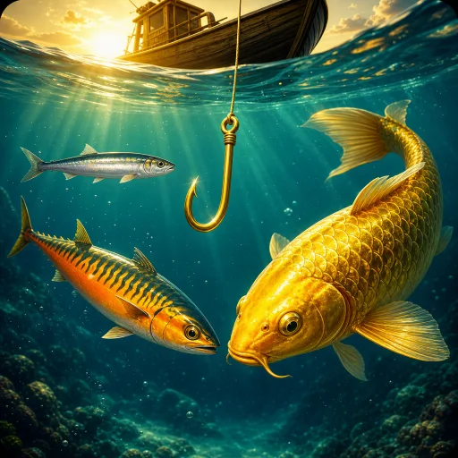

흔들리는 바늘을 던져값진 물고기를 끌어올리세요
흔들리는 낚싯바늘을 바다에 던져 물고기를 끌어올리고 돈을 모으는 50단계 낚시 게임입니다. 멸치 · 고등어부터 참치 · 황금잉어 · 상어까지 값이 다른 물고기가 헤엄치고, 장화나 빈 캔 같은 쓰레기가 걸리기도 해요.
바늘이 좌우로 흔들릴 때 화면을 탭해 던지세요. 걸린 것은 자동으로 끌어올리는데, 무거울수록 천천히 올라와요. 제한 시간 안에 목표 금액을 채우면 다음 바다로 넘어가요.